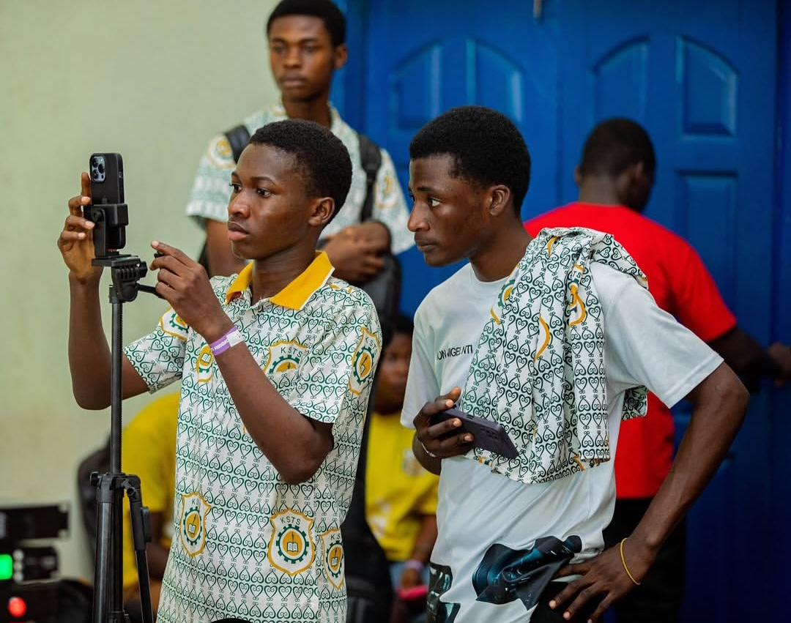

Meet Our Executives
Around 50 students serve in regional-level leadership roles defined by the constitution — across the Regional Executive Committee, the four Zonal Executive Committees, the Literary & Editorial Committees, the Writers & Debaters Society, and the Permanent Secretariat. Browse by body below, and drop in real names once the current term is announced.
The Regional Executive Committee (REC) is the Council's highest standing leadership body — the President, Vice-President, Secretary, and four Trustees, each of whom also heads one of the four zones.

Mr. Osborne Kwame Opoku
James Hope Arthur
Blessing Twumasiwaa
Ross Erasmus Akum-Nyemi

Kwaku Twimasi
Kwame Agyeman Owusu-Ameyaw
Renee Grace Afi Mawutor
Kelvin Asante Sarkodie
Each of the four zones runs its own Zonal Executive Committee (ZEC), headed by that zone's Trustee, alongside a Zonal Secretary and Zonal Organizing Secretary.
Zone 1
Kwaku Twimasi
Marvelous Samuel Apewe
Prince Salim Dodoo
Zone 2
Kwame Agyeman Owusu-Ameyaw
King Kwaku Antwi Dankwah
Christian Owusu Ansah Sekyere
Zone 3
Renee Grace Afi Mawutor
Jackline Ameyaa Yeboah
William Owusu Afiriyie
Zone 4
Kelvin Asante Sarkodie
Ama Aku Sika Frimpong
Mariam Rabiu
The Literary Group Executive Committee (LIGEC) coordinates the Regional Literary Group, while the five-member Editorial Committee (EDICOM) runs the Council's publications and Congress documentation.
Literary Group Executive Committee (LIGEC)
Von-Berg David John Joseph
Henry Kwame Frimpong
Christabel A. Frimpong
Lawrenda Owusu Boatemaa
Oti Boateng Osei-Wusu
Felicia Biyah Biitey
Editorial Committee (EDICOM)
Osei Tutu Nana Ababio
Gifty Somtim Tawiah
Emmanuel Osei Larbi
Roselyn Awisi Boakye
Nkansah Kwaku Gyasi
The Writers & Debaters Society (WDS) — "I speak, I write, therefore I am" — runs its own regional executive committee under the ARSRC umbrella.
WDS Regional Executive Committee
Terry Baapeng
Christian Omane Danquah
Zeinab Naboo Sandra Wepari
Getrude Addai
Yeboah Asiamah Peprah
Japheth Bayuo Mwinsumbu
The Permanent Secretariat handles the Council's day-to-day administration, finances, and record-keeping, based at the Regional Capital.